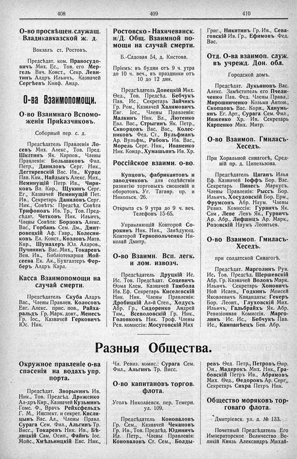

Лист источника 268
Скан

Распознанный текст
408
О-во просвѣщен. служащ.
Владикавказской ж. д.
Вокзалъ ст. Ростовъ.
Предсѣдат. ком. Правосудо-
вичъ Мих. Ес., Тов. его Мер-
гель Вяч. Конст., Секр. Леви-
тинъ Алдръ Ильичъ, Казначей
Сергѣевъ Кинф. Андр.
О-ва Взаимопомощи.
О-во Взаимнаго Вспомо-
женія Приказчиковъ.
Соборный пер. с. д.
Предсѣдатель Правленія Ло-
севъ Мих. Алекс., Тов. Пред.
Шкатинъ Як. Карпов., Члены
Правленія: Большаковъ Фил.
Петр., Даниловъ Серг. Ник.,
Дегтяревскій Вас. Ив., Курце
Пав. Кам., Найдыкъ Алекс. Мих.,
Неминущій Петр. Ив., Чири-
ковъ Вл. Кир., Щукинъ Серг.
Ег., Казначей Неминущій Пет.
Ив., Секретарь Даниловъ Серг.
Ник., Совѣтъ: Предсѣд. Совѣта
Трифоновъ Ив. Тр., Тов. Пред-
сѣдат. Четковъ Ник. Ильичъ,
Члены Совѣта: Борзовъ Алекс.
Вас., Горбань Сем. Дм., Дмит-
ровецкій Аф. Гавр., Колесни-
ковъ Ел. Конст., Козловъ Матв.
Кир., Шумахеръ Юл. Алдров.,
Пучининъ Вас. Мих., Токаревъ
Вен. Ив., Библіотекарша Мой-
сеева Ек. Ак., Бухгалтеръ Фер-
беръ Алдръ Карл.
Касса Взаимопомощи на
случай смерти.
Предсѣдатель Скуба Алдръ
Вас., Члены Правлен. Колосовъ
Евг. Алекс. прис. пов., Райха-
ральдъ Гр. Марк. докт., Менесъ
Гр. Іос., Казначей Герковичъ
Юс. Ник.
409
Ростовско-Нахичеванск.
н/Д. Общ. Взаимной по-
мощи на случай смерти.
Б.-Садовая 54, д. Кистова.
Пріемъ: въ будни отъ 9 ч. утра
до 10 ч. веч., въ праздники отъ
10 до 12 дня.
Предсѣдатель Донецкій Мих.
Ѳед., Тов. Предсѣд. Бебчукъ
Пав. Ис., Секретарь Зайчикъ
Гр. Ром., Казначей Халимовичъ
Евг. Іос., Члены Правленія:
Малкинъ Ник. Вл., Лютенко
Евл. Вас., Стрыгинъ Як. Петр.,
Скворцовъ Вас. Вас., Колес-
никовъ Ѳед. Ст., Вульфманъ
Ар. Вульфм., Рябовъ Ив. Вас.,
Морель Серг. Ник., Иваненко
Ник. Кондр., Хумашьянъ Ив. Хр.
Россійское взаимн. о-во.
Купцовъ, фабрикантовъ и
заводчиковъ для содѣйствія
развитію торговыхъ сношеній и
оборотовъ. Уг. Таганр. пр. и
Никольск. 26.
Открыта съ 9 утра до 9 ч. веч.
Телефонъ 15-65.
Управляющій Конторой Со-
рокинъ Ник. Ник., Завѣдующ.
Конторой Тернопольченко Ни-
колай Дмитр.
О-во Взаимн. Всп. легк.
и лом. извозч.
Предсѣдатель Друцкій Ис.
Ис. Тов. Предсѣдат. Соцевичъ
Ѳома Клем. Казначей Тамбола
Ив. Еф. Секретарь Киселевскій
Ник. Ник. Члены Правленія:
Дробицкій Ал-й Степ., Ходусъ
Абр. Гр., Сидоренко Андрей
Тим., Всеволовскій Гр. Ник.,
Головковъ Ник. Троф. Члены
Рев. комиссіи: Мосуговскій Мих
410
Григ., Никитинъ Гр. Ив., Сева-
говскій Ив. Гр., Ефимовъ Ѳед.
Вас.
Отд. О-ва взаимоп. служ.
въ учрежд. Дон. обл.
Городской домъ.
Предсѣдат. Лукьяновъ Вас.
Алекс. Замѣститель его Пчели-
ченко Пав. Ѳед. Члены Правл.:
Мирошниченко Козьма Антон.,
Скопцовъ Вас. Корн., Ханумь-
янъ Ег. Арт., Сурага Сем. Фил.,
Ивженко Хр. Ив. Секретарь
Карпенко Мих. Митр.
О-во Взаимоп. Гмиласъ-
Хеседъ.
При Хоральной синагогѣ, Сред-
ній пр. д. Ципельзона.
Предсѣдатель Цаганъ Илья
Еф. Казначей Іоффъ Бор. Вас.
Секретарь Пинесъ Маркусъ.
Члены Правленія: Рыссъ Бор.
Ильичъ, Хосудовскій Бор. Ерм.,
Фрумсонъ Абр. Наум. Члены
Ревиз. Комиссіи: Гурвичъ Як.
Сам , Леве Левъ Як., Гурвичъ
Ар. Абр., Лифшицъ Ар. Марк.,
Розовскій Наумъ Леонтьев.
О-во Взаимоп. Гмиласъ-
Хеседъ.
при солдатской Синагогѣ.
Предсѣдат. Марголинъ Рув.
Ис. Тов. Предсѣд. Шершевскій
Абр. Гр. Казначей Воловъ Марк.
Ильичъ. Секретарь Хоновичъ
Ной Исаев., Годкинъ Моисей
Яковлевичъ Кандидаты: Гекеръ
Бор. Леонт., Глуховскій Мих.
Ильичъ, Гальбрайхъ Як. Абр.
Ревизіонная Комиссія. Марго-
линъ Ис. Ис., Бебчукъ Пав.
Ис., Кампанѣецъ Бен. Абр.
Разныя Общества.
Окружное правленіе о-ва
спасенія на водахъ упр.
порта.
Предсѣдат. Зворыкинъ Ив.
Ник., Тов. Предсѣд. Дриженко
Ал-дръ Кир., Казначей Кузьминъ
Гомс. Ф., Врачъ Рейхсфельдъ
Г. М., Инспект. и секрет. Кисли-
цынъ Вас. Ал., Члены Правл.
Сурага Сем. Фил., Альгинъ Тр.
Висс., Токаревъ Ник. Ив., Бѣ-
лицкій Сам. Осип., Файнъ Іос.
Мойс., Хмѣльницкій Евс. Ник.,
Чл. Ревиз. комис.: Сурага Сем.
Фил., Альгинъ Тр. Висс.
О-во капитановъ торгов.
флота.
Уголь Николаевск. пер. Темерн.
ул. 109.
Предсѣдатель Коноваловъ
Гр. Сем., Казначей Чекановъ
Гр. Ив., Тов. Предсѣд. Юдиничъ
Ил. Петр., Члены Правленія:
Коноваловъ Ст. Сем., Болды-
ревъ Ѳед. Петр., Петровъ Ѳир.
Он., Мадерокъ Мих. Ник., Гра-
бовскій Петръ Ив., Абрамовъ
Мих. Ѳед., Ѳедоровъ Ар. Серг,,
Секретарь Сихра Петръ Ник.
Общество моряковъ тор-
говаго флота.
Дмитріевск. ул. д. № 133.
Почетный Предсѣдатель Его
Императорское Величество Ве-
ликій Князь Александръ Михай-